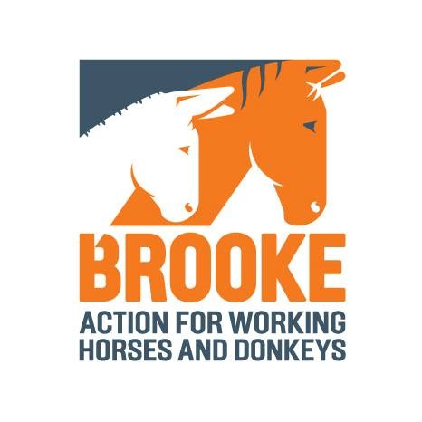
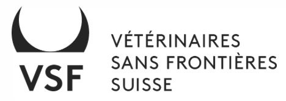
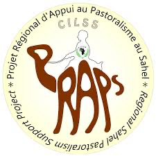
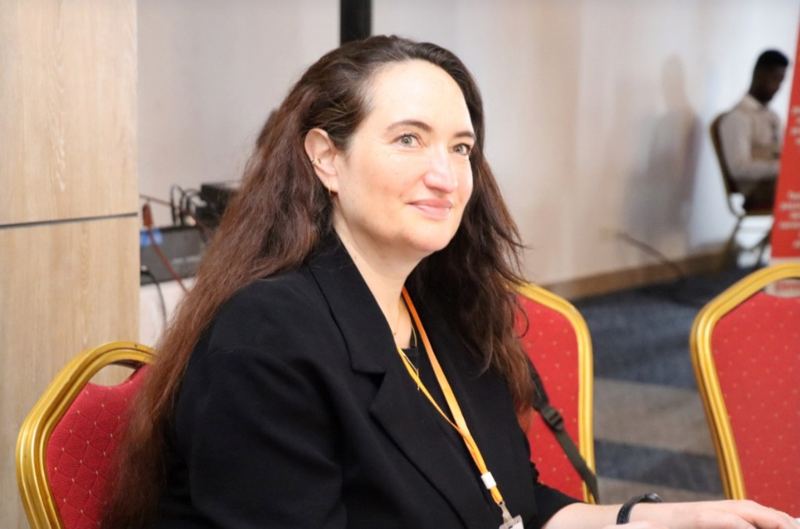
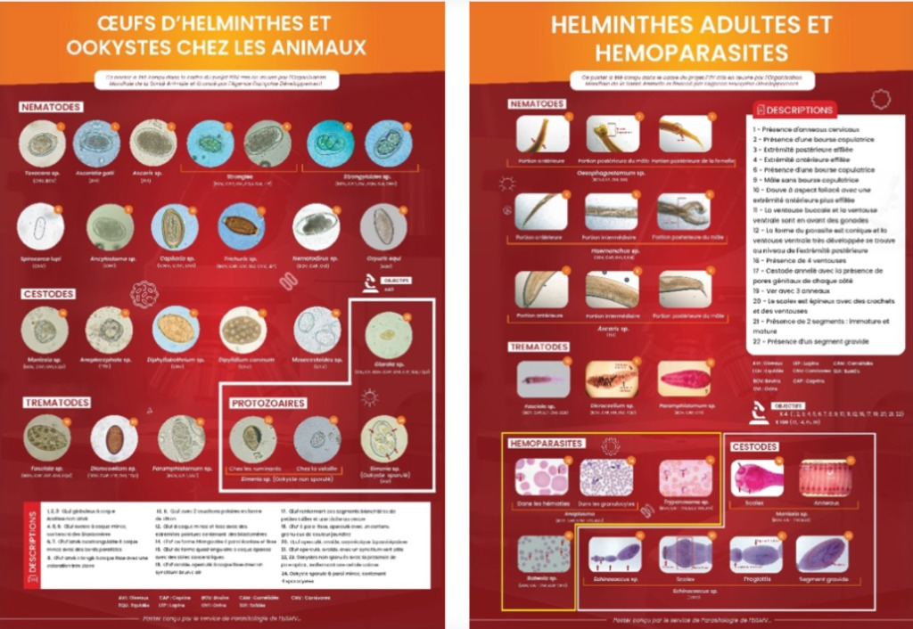

PROJET P3V
Professionnalisation des Para-Professionnels Vétérinaires
0%
Moussa contemple son troupeau dans la brume du petit matin. Ces vingt-deux têtes de bétail, c'est toute sa vie. La nourriture de ses enfants. L'école. L'avenir.
Son souffle est court. Son regard, vide. Moussa la connaît depuis sa naissance. Il sait que sans aide rapidement, elle ne passera pas la nuit.
Son téléphone sonne dans le vide. Dans cette région du Bénin, la frontière entre une vie sauvée et une vie perdue, c'est souvent la distance et le manque de professionnels qualifiés.
Elle connaît chaque troupeau de la région. En quelques gestes précis — formés, validés, reconnus — elle évalue, traite, rassure. Moussa la regarde travailler avec confiance.
Pour des millions d'éleveurs d'Afrique de l'Ouest, l'accès aux soins reste un défi quotidien. Des professionnels comme Fatimata sont la clé — et leur formation, notre mission.
Découvrir le Projet P3VUn projet régional pour améliorer durablement l'accès des éleveurs à des services vétérinaires de qualité en renforçant les capacités, le statut et l'intégration formelle des PPV dans les systèmes nationaux de santé animale.




Les services vétérinaires, composés de vétérinaires et de para professionnels vétérinaires (PPV), sont essentiels à :

Dans ce contexte, les PPV jouent un rôle déterminant en appui aux vétérinaires :

Consciente de ces enjeux, l'OMSA a reconnu le rôle stratégique des PPV et a développé des outils visant à mieux définir leur profil, leurs responsabilités et leur intégration au sein du réseau de santé animale.
Ces efforts se sont concrétisés à travers le Projet P3V, un cadre structurant pour renforcer durablement le personnel vétérinaire.
Découvrir le Projet P3VDans les systèmes d’agriculture familiale, l’élevage occupe une place centrale en remplissant des fonctions multiples : nutritionnelle, économique, environnementale et sociale. Les services vétérinaires, composés de vétérinaires et de paraprofessionnels vétérinaires (PPV), sont essentiels à la santé animale et à la santé publique.
Toutefois, le manque de ressources humaines qualifiées limite l’efficacité de la prévention et du contrôle des maladies animales. Dans ce contexte, les PPV jouent un rôle déterminant en appui aux vétérinaires, notamment dans les zones reculées.
Consciente de ces enjeux, l’OMSA a reconnu le rôle stratégique des PPV et a développé des outils et méthodologies visant à mieux définir leur profil et leur intégration au sein du réseau de santé animale.
Ces efforts se sont concrétisés à travers plusieurs initiatives, dont le projet P3V, qui constitue un cadre structurant pour renforcer durablement le personnel vétérinaire.
Chiffre clé : On estime que plus de 70% des soins vétérinaires en zone rurale sahélienne sont prodigués par des PPV. Leur professionnalisation a un impact direct sur la sécurité alimentaire.
Le projet P3V poursuit un objectif global : améliorer la santé animale et les moyens de subsistance des éleveurs en Afrique de l'Ouest, à travers quatre objectifs spécifiques.
Élaborer des référentiels de compétences et curricula de formation reconnus aux niveaux national et régional, intégrant les normes OMSA/WOAH.
Appuyer les institutions de formation pour leur permettre de dispenser des formations de qualité, avec les équipements et formateurs qualifiés nécessaires.
Accompagner les États dans l'adoption de cadres réglementaires reconnaissant officiellement le statut des PPV et délimitant leurs attributions.
Construire un réseau régional d'acteurs de la formation vétérinaire para-professionnelle pour favoriser les échanges et la capitalisation.
Le projet P3V est structuré autour de cinq composantes complémentaires agissant sur l'ensemble de la chaîne de valeur de la professionnalisation vétérinaire.
Analyser la situation initiale (démographie, cadre législatif, formations) afin de définir des stratégies nationales de renforcement du réseau de santé animale.
Mise en place un cadre juridique et réglementaire favorable intégrant les PPV, appuyé par des mécanismes de contrôle et de concertation interprofessionnelle.
Revue des curricula et appui à la formation de qualité (initiale et continue) via un accompagnement technique et matériel.
Créer un environnement durable favorisant l’insertion professionnelle des PPV et la rentabilité de leurs activités.
Composante transversale couvrant la communication, la coordination nationale et l’évaluation globale du projet.
Découvrez le déploiement opérationnel du projet P3V, de la phase de diagnostic à la gouvernance globale.
Améliorer l'intégration des PPV dans le réseau formel en clarifiant leurs statuts, rôles et responsabilités.
Appui sur le Programme d'Appui à la Législation Vétérinaire (PALV). Missions d'évaluation du cadre légal suivies par la mise en place de groupes de travail tripartites (Autorité Vétérinaire, Ordre National, représentants des PPV).
Le P3V s’est appuyé sur des partenaires locaux (VSF Suisse au Togo et Brooke au Sénégal) agissant comme relais et porte-parole pour maximiser l'appropriation effective, faciliter la compréhension des objectifs et renforcer l'engagement pour la pérennisation au-delà de la clôture.
Sénégal : Initialisation de la partie législative du projet de Code de Santé Publique Vétérinaire. 5 cadres de concertation régionaux opérationnalisés.
Togo : Élaboration et validation des textes règlementaires encadrant les conditions d’exercice des PPV et leur supervision. 6 cadres de concertation opérationnels, permettant de désamorcer les tensions historiques.
.JPG)
Gestion stratégique, coordination technique et monitoring continu des impacts du projet.
Pilotage par une équipe de coordination (OMSA), des points focaux nationaux et des partenaires techniques. Gouvernance via des Comités de Pilotage annuels et des Réunions de Coordination Nationales régulières.
Mise en œuvre d'un Système de Suivi, Évaluation et Apprentissage (SSE) rigoureux.
Forte adhésion des parties prenantes grâce à une communication ciblée. Flexibilité budgétaire et opérationnelle pour s'adapter aux retards (COVID-19) et aux réalités du terrain.
Gestion efficace de la charge administrative inhérente aux procédures fiduciaires strictes de l'AFD.

Pour garantir la pérennité et la transférabilité du P3V, les processus, les réussites, les limites et les leçons apprises ont été capitalisés à travers un dispositif structuré accessible sur la page web du projet.
Une équipe pluridisciplinaire et engagée, coordonnée par l'OMSA, pour la réussite du projet P3V.
Responsable du développement de la stratégie sur les PPV et de la coordination des activités au niveau global.

En charge du budget et des relations avec le bailleur pour assurer la viabilité financière du projet.
Responsable du suivi des activités à Bamako, de la valorisation des résultats et des perspectives du projet en Afrique.

Appui en ingénierie de formation (EISMV Dakar), animation du réseau et support opérationnel quotidien.
Découvrez les outils innovants développés par le P3V pour renforcer les compétences des PPV sur le terrain.

Dispositifs d'identification des parasites adultes (Fasciola sp., Dicrocoelium sp., Trypanosoma sp., etc.) et des œufs/oocystes (Eimeria sp., cestodes, strongles, etc.).
Note : Sur 7 types de parasites identifiés, 4 types majeurs ont été livrés aux écoles partenaires.
Une série de supports audiovisuels couvrant les fondamentaux de la pratique vétérinaire au Sahel, de la contention à la chirurgie.
La version numérique du manuel MUPSA offre une interface intuitive, une navigation hiérarchisée et une accessibilité multi-supports (Web/Mobile) disponible hors ligne.
Le projet P3V intervient simultanément au Sénégal, au Bénin et au Togo, adaptant son approche aux réalités locales tout en promouvant une harmonisation régionale.


Des résultats concrets sur le terrain, au service des éleveurs et de la santé animale au Sahel.
Découvrez les activités du projet P3V à travers nos photos et vidéos de terrain.
Photo
Photo
.JPG)